คลาสปั้นมือ
Hand-building
ขึ้นรูปด้วยมือ บีบ ม้วน แปะ จะปั้นแก้ว จาน หรือน้องแมวก็ได้ เหมาะกับเด็ก ๆ และมือใหม่
890 บาท / คน
Joon Studio · นครปฐม
สตูดิโอปั้นดินและเพ้นท์เซรามิกที่ใครก็มาได้ จะเป็นพ่อแม่ลูก มาเดี่ยว มาคู่ หรือยกทีมบริษัทมาทั้งแก๊ง ไม่ต้องมีพื้นฐาน มีแค่มือกับความสนุกก็พอ
Pottery Class
จองล่วงหน้าอย่างน้อย 1 วัน · Reservation required at least 1 day in advance
Hand-building
ขึ้นรูปด้วยมือ บีบ ม้วน แปะ จะปั้นแก้ว จาน หรือน้องแมวก็ได้ เหมาะกับเด็ก ๆ และมือใหม่
890 บาท / คน
Wheel-throwing + Electric Kiln Firing
ลองขึ้นรูปบนแป้นหมุนแบบมืออาชีพ แล้วเราเผาให้จนเป็นเซรามิกพร้อมใช้งานจริง
1,090 บาท / คน
Walk-in Workshops
ไม่ต้องจอง มีเครื่องดื่มและของทานเล่นระหว่างนั่งเพ้นท์ · No booking needed
Ceramic Painting
แก้ว จาน แจกัน แม็กเน็ต เลือกชิ้นที่ชอบแล้วระบายเลย รอรับงาน 2–3 สัปดาห์
Tote Bag Painting
ถุงผ้าลายเดียวในโลก วาดเสร็จสะพายกลับบ้านได้เลย
Canvas & Acrylic Painting
ระบายสีบนเฟรมผ้าใบ ไว้แขวนผนังห้องให้สดใส
Bead Craft
ทำสร้อยข้อมือ พวงกุญแจ ใส่เองให้เพื่อน หรือใส่คู่กับลูก
Ceramic Magnets
เพ้นท์น้องหมา น้องแมว ปลาปักเป้า วาฬ ตามใจชอบ เพ้นท์เสร็จเราติดแม็กเน็ตให้เลย เอาไปติดตู้เย็น ติดล็อคเกอร์ น่ารักมากกก
Who's coming?
วันหยุดนี้พาลูกมาจับดินแทนจอ ได้ใช้มือ ได้เลอะ ได้ของฝีมือตัวเองกลับบ้าน ส่วนพ่อแม่ก็นั่งจิบเครื่องดื่มหรือมาปั้นด้วยกันก็ได้
อยากให้ทีมได้พักจากงาน ลองปั้นดินด้วยกันดูไหม ได้หัวเราะ ได้ช่วยกัน และได้ผลงานเป็นที่ระลึกของทีม
เดทสายคราฟต์ วันเกิดเพื่อน หรืออยากหาอะไรทำคนเดียวเงียบ ๆ ที่นี่ก็ต้อนรับ
Creative Studio Management
สำหรับหน่วยงาน กลุ่มวิสาหกิจ ชุมชน และองค์กร ที่อยากรู้ว่าเบื้องหลังสตูดิโอสร้างสรรค์หนึ่งแห่งทำงานกันยังไง
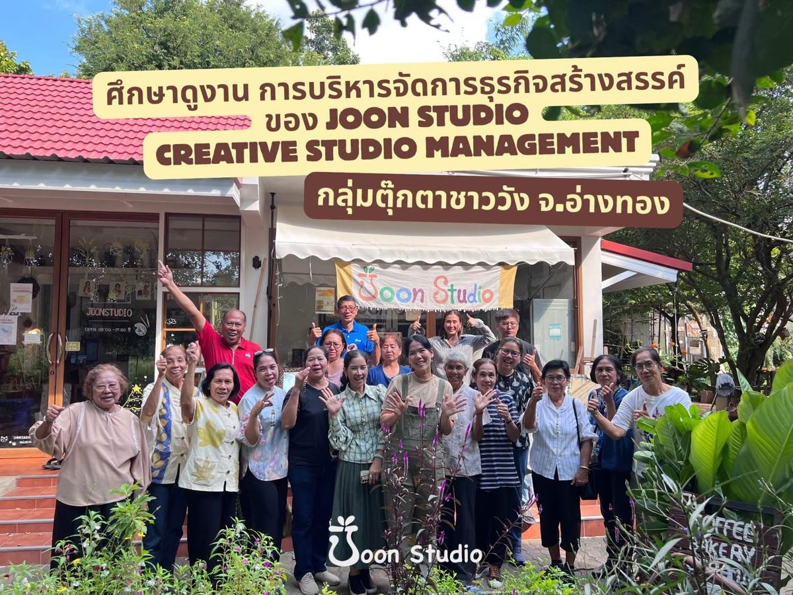
ครูจูนเล่าจากประสบการณ์ทำธุรกิจจริง ตั้งแต่จุดเริ่มต้น การแบ่งงาน ดูแลทีม ไปจนถึงการทำให้ลูกค้ากลับมาอีก ทั้งเรื่องที่ทำได้ดีและเรื่องที่ยังต้องปรับ ย่อยให้เป็นภาษาง่าย ๆ ไม่วิชาการจนเกินไป
และเพราะธุรกิจของเราไม่ได้จบแค่การขายของ เราเลยชวนคุยต่อว่าจะเชื่อมโยงกับชุมชน ใช้ทรัพยากรท้องถิ่น และเติบโตไปด้วยกันได้อย่างไร
🏠 สตูดิโอ ☕ คาเฟ่ 🌿 ฟาร์มจดจำ
สอบถามการดูงานเลื่อนดูทีละขั้นได้เลย →
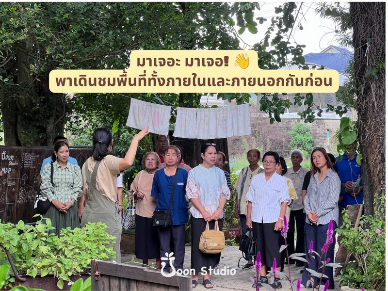
เดินชมพื้นที่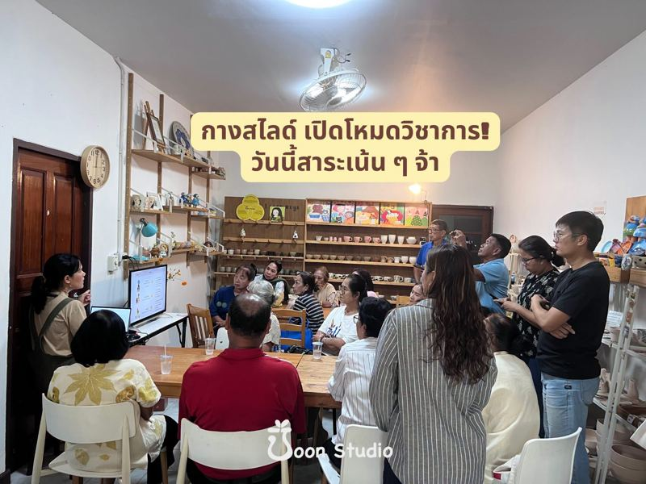
กางสไลด์ เล่าเรื่อง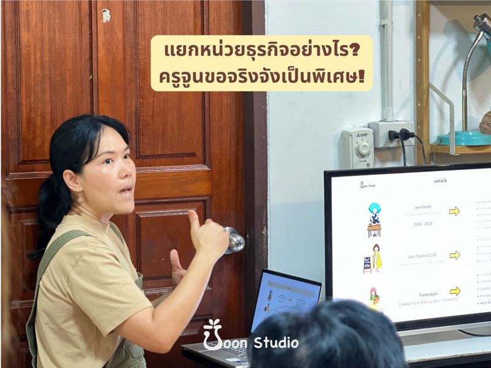
แยกหน่วยธุรกิจยังไง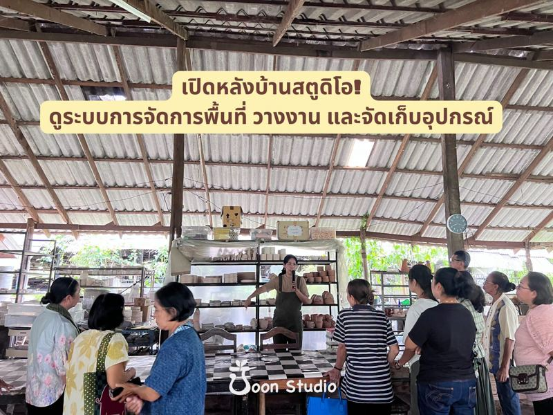
เปิดหลังบ้านสตูดิโอ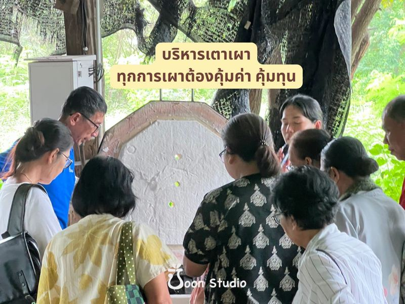
บริหารเตาเผา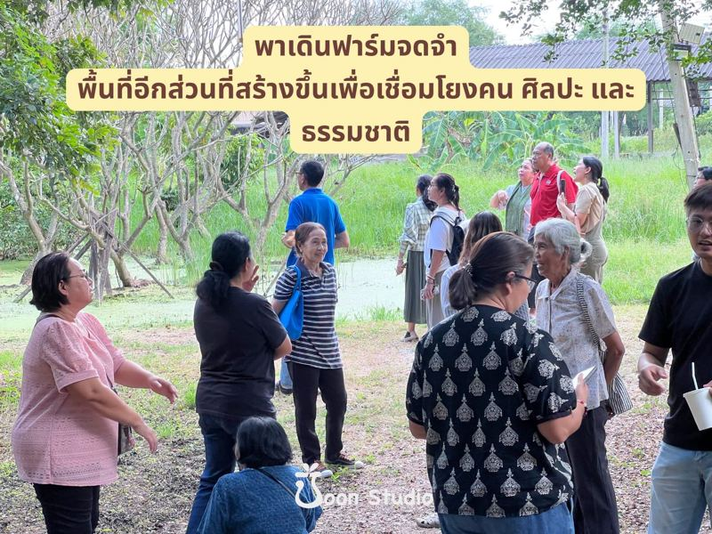
เดินฟาร์มจดจำ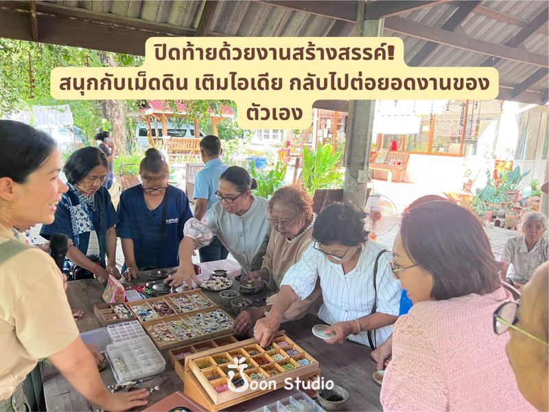
ปิดท้ายด้วยงานคราฟต์ปรับเนื้อหาให้เหมาะกับกลุ่มผู้ดูงานและวัตถุประสงค์ของแต่ละองค์กรได้ · สอบถาม LINE @joonstudio หรือโทร 099-142-9461
From our fridge
ลองลากรูปเล่นได้นะ เหมือนแม็กเน็ตบนตู้เย็นเลย ✋
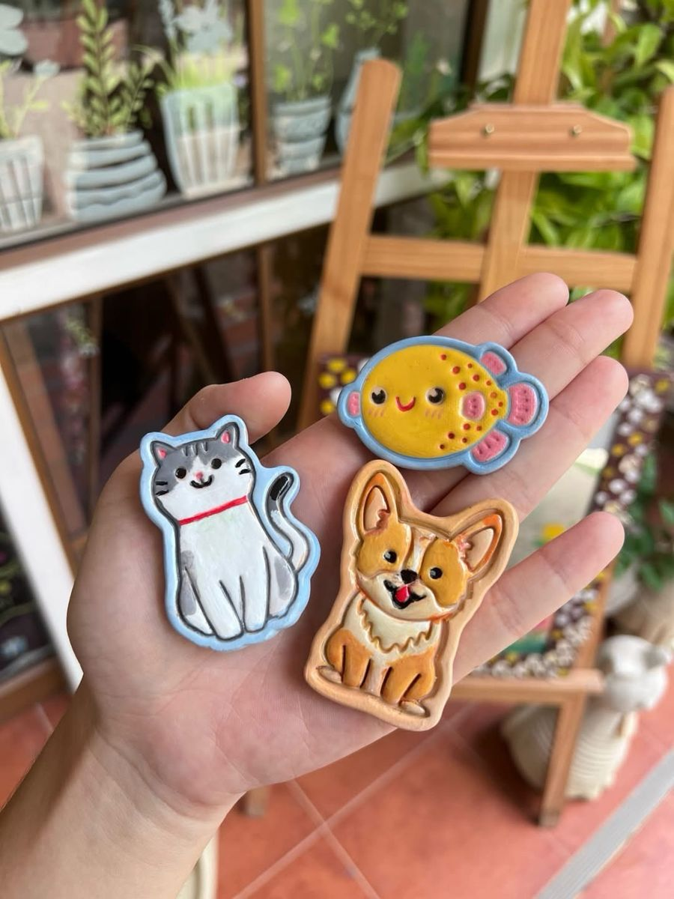
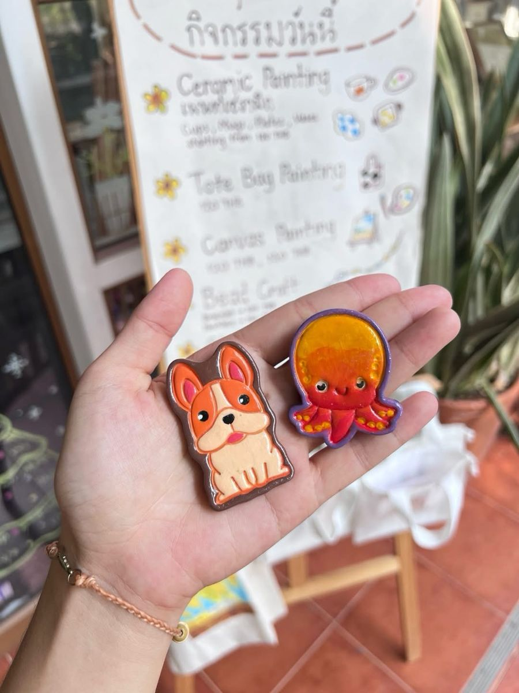
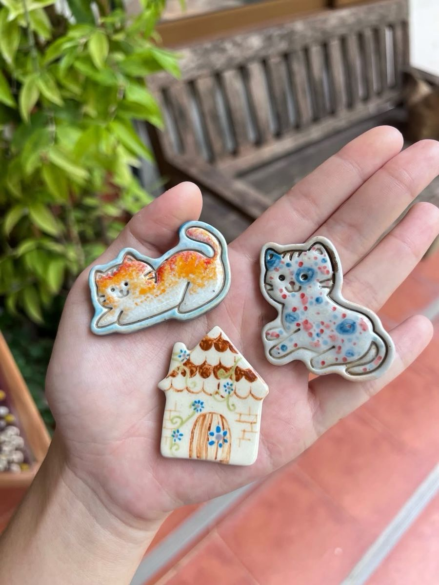
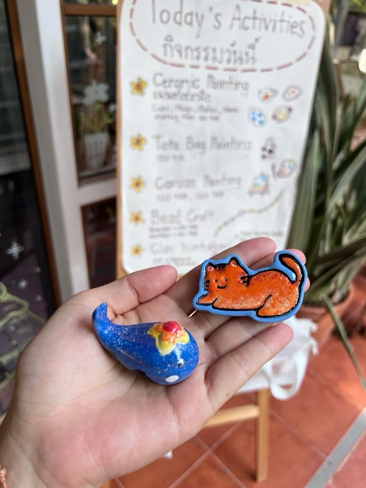
Come say hi
พฤหัส – จันทร์
Thursday – Monday
09:00 – 17:00
หยุด อังคาร – พุธ
Closed Tuesday – Wednesday
📍 นครปฐม